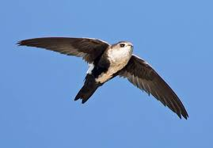
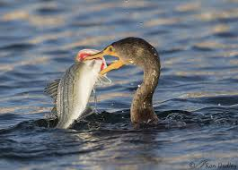

|  | VS |  | Swift | Falls to | Cormorant |
|---|
The Cormorant has worked hard to survive and adapt—a living dinosaur among us that, despite all odds, still endures. Life hasn’t handed it anything on a silver platter. It lacks even the luxury of waterproof feathers, forced instead to perch with wings outstretched like a dark crucifix, drying itself after every hard-earned dive for fish. Meanwhile, the Throated Swift glides effortlessly through the skies—not because it labored for that grace, but because it was gifted by the gods with a body designed for airborne delight. It lives in a different realm, untouched by struggle, drifting like a feathered wisp across the heavens. To humans, the Swift may seem like a fairy and the Cormorant like a demon, but the Cormorant has earned its place as the champion in this battle.